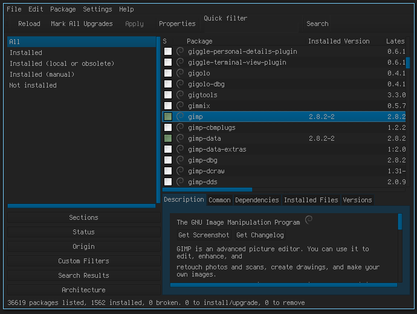

lang fr|gb

gestion des paquets Debian
livarp dispose de trois outils pour mettre à jour les dépôts, installer ou désinstaller des paquets Debian:
- le terminal avec la commande apt-get ou aptitude
- aptitude en console, la gestion assitée des paquets en cli.
- synaptic, la gestion des paquets Debian en mode graphique, disponible dans tous les menus du livarp, section système:gestion des paquets 